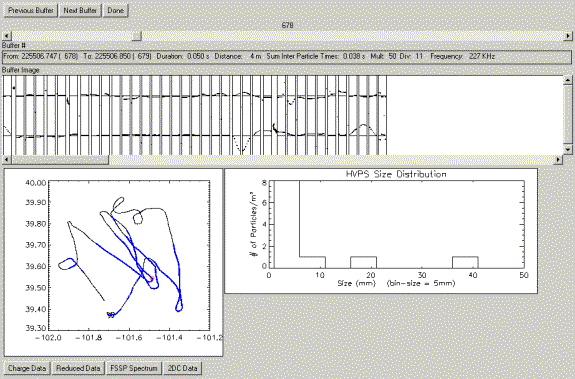
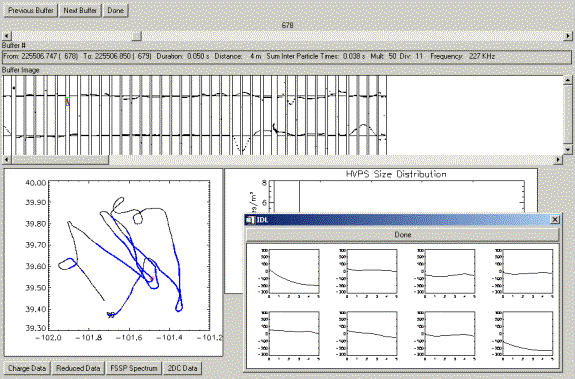
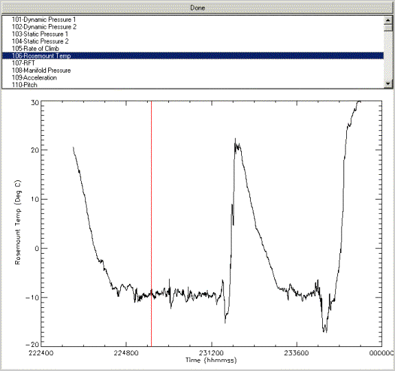
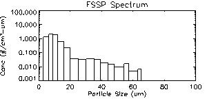

Description For Using T28DISPLAY program – Version 1.0
- The
“Display HVPS” option
It is designed to display the HVPS data (buffer by buffer) for the STEPS 2000 project. After choosing this option the following window will open:
 Choose a flight number and a new window
opens!
Choose a flight number and a new window
opens!

The user can choose any buffer to
view. The buffer is displayed as a
sequence of particle image, followed by charge displays. If you click on one of these particles, the
particle will be surrounded by a red rectangle, and then by clicking on “Charge Data”
option, the charge recorded on each of the 8 plates is graphically shown.

The T28 track shown on the lower
left corner, displays in blue color the T28 track while flying in the
cloud. The red square represents the
position on the track where the buffer displayed was collected. For each buffer displayed, a size
distribution graph is plotted in the main window.
If the “Reduced Data”
option is selected, the following window will open:

The user has the option to view
any one per second parameters (Slow Data) that are recorded during the
flight. The red vertical bar shows the
location of the buffer during the flight.
The “FSSP Spectrum”
option will display this window:
